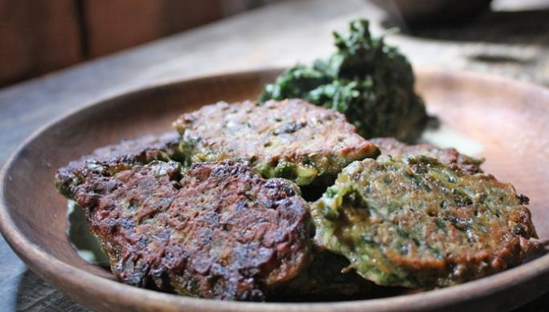

Green Patties

Description
The nature's larder is bursting and the wild plans - the weeds - stand knee high. You can actually eat your weeds. It's good for you - and your wallet.
Here's a recipe for some tasty vegetarian patties full of vitamins.
Ingredients
- 1 basket full of different fresh herbs
- 2 chopped onions
- 3 chopped cloves of garlic
- 2 eggs
- 1.5 cups oatmeal
- A little milk
- Salt
- Butter for frying
Steps
- Wash and drain the weeds and chop them finely. Mix them with onion, oatmeal, milk, eggs and season with salt. The consistency must be quite firm.
- Scoop a spoonful of the mixture and shape into a ball using the palm of your hand.
- Melt the butter in a frying pan and cook the patties until golden brown on both sides.
- Enjoy!